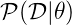

Admission to candidacy exam
Bas Rustenburg
Date : tbd
Alchemical free energy calculations
Alchemical free energy calculations are a powerful computational tool for computing binding free energies, as they allow for efficient sampling of the relevant states of protein-ligand complexes.

www.alchemistry.org
Specific aims
In this proposal, we address three of the most significant open challenges in the quantitative modeling of small molecule recognition by alchemical free energy calculations.
Aims
- Establish a correct quantitative treatment of alchemical free energy calculations for binding of charged ligands.
- Quantify the magnitude of protonation state effects on binding
- Develop a framework for alchemical free energy calculations to describe weak association and cooperative ligand binding.
Establish a correct quantitative treatment of alchemical free energy calculations for binding of charged ligands
Aim 1.
 | In order to apply alchemical free energy calculations to charged ligands, one needs to eliminate artifacts introduced into the calculation arising from the modeling of bulk solvent behavior using a small periodic system. Ligand interactions with:
|
Image Source: [1] |
MM Reif and C Oostenbrink. J Comput Chem 35.3 (Nov. 2013), pp. 227–243
Establish a correct quantitative treatment of alchemical free energy calculations for binding of charged ligands
Aim 1.
| Bulk liquids are approximated in simulation, either by using periodic boundary conditions, or an implicit solvent. Often, to further reduce computation cost, we introduce truncated,potentials and non-Coulombic electrostatics (such as particle mesh Ewald,[PME],and reaction field [RF] potentials). |
Image Source: [2] |
MM Reif and C Oostenbrink. J Comput Chem 35.3 (Nov. 2013), pp. 227–243
Establish a correct quantitative treatment of alchemical free energy calculations for binding of charged ligands
Aim 1.
- A number of corrections have been proposed but:
- They have not been compared to each other
- Quantitative correctness of these methods has not been established
- Sources:
- MM Reif and C Oostenbrink. J Comput Chem 35.3 (Nov. 2013), pp. 227–243
- GJ Rocklin et al. J Chem Phys 139.18 (2013), p. 184103.
- YL Lin et al. J Chem Theory Comput 10.7 (July 2014), pp. 2690–2709.
Establish a correct quantitative treatment of alchemical free energy calculations for binding of charged ligands
Aim 1.
Subaim 1.1: Develop an accurate approach to quantifying experimental uncertainty in ITC using Bayesian inference.
Because we need a reliable experimental dataset in order to make a quantitative comparison
Subaim 1.2: Perform a quantitative comparison of suggested correction models to experiments to establish a correct treatment of charged ligands in alchemical free energy calculations.
Evaluating the charge corrections, testing an alternative (counter ions), comparing to each other and experiment
Develop an accurate approach to quantifying experimental uncertainty in ITC using Bayesian inference.
Subaim 1.1
The experimental parameters,  , can be estimated using Bayes rule:
, where
, can be estimated using Bayes rule:
, where
is the posterior distribution. The probability of the parameters given the observed data. This is what we want to know!
-  is the likelihood. The probability of the observed data, given a single set of parameters.
are distributions containing prior information. We can use this to propagate errors.
We can sample from the posterior distribution by using a technique called Markov chain Monte Carlo.